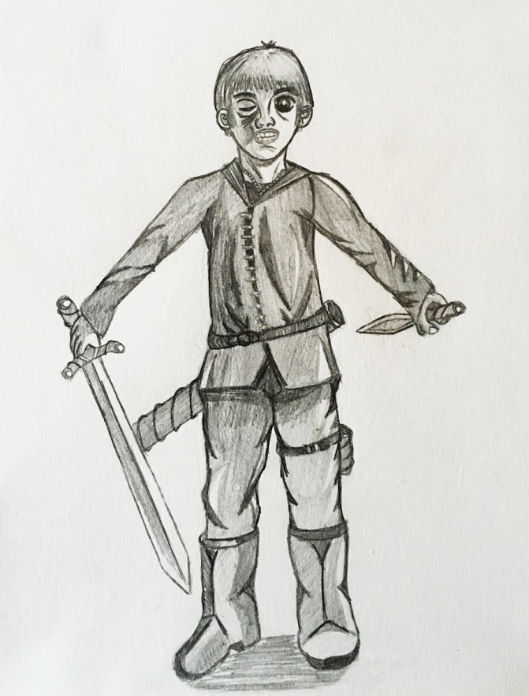

Défi 12 personnages de fantasy : Artémis Entreri
Artémis est un humain, ancien membre de guildes peu recommandables, qui deviendra l’ennemi et le plus grand rival de Drizzt Do’Urden dans la série La légende de Drizzt de R.A. Salvatore.
Artémis est svelte, vif et est un excellent combattant. Il possède une épée et une dague, qu’il utilise simultanément pour affronter Drizzt. Malgré sa condition d’humain, Artémis est aussi puissant que Drizzt. Leurs forces et leurs volontés s’affrontent sans relâche, sans qu’aucun des deux adversaires ne parviennent à vaincre l’autre.
Il y a un seul moment où Drizzt prend le dessus sur Artémis en le blessant à l’oeil. C’est dans cet état que j’ai représenté Artémis.
C’est le second personnage, après Tungdil, que je dessine sans regarder de modèle de postures ou de vêtements.Il a l’air un peu doudouille, comme s'il portait des habits rembourrés de mousse, comme un costume de fantasy, mais ça va encore. Il a une bonne tête, le pauvre...
